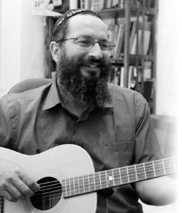

Turning the World of Theater Upside-Down
Actor Chaviv Mizrachi had no interest in the spiritual world. He was busy living life, teaching drama and involved with the theater and the arts. Then the birth of his oldest son, Dovid Maor, changed his life. A year after his birth, Chaviv and his wife were told that something wasn’t quite right with him. That got them started on a search that culminated with meeting someone who worked for a Chabad house in Kiryat Yovel and putting on t’fillin. From there, it didn’t take long until Chaviv was fully religious.

Eight years ago, I spoke with the shliach in Kiryat Yovel in Yerushalayim, R’ Yosef Elgazi, and asked him to refer me to baalei t’shuva in his community that I could interview for Beis Moshiach. He referred me to the Mizrachi family who live in his neighborhood and told me their story in brief. I called the Mizrachis and had a fascinating conversation with the wife, Hadar, who told me about her Chassidic journey, which began after the birth of their son and about her husband who followed her. I waited for the right time to publicize their story.
A year went by and one day, I met R’ Elgazi in 770, sitting and learning with another Lubavitcher. I went over to him to thank him and apologized that the interview had not been published. “In any case, it was fascinating to hear the wife’s story.” R’ Elgazi smiled and introduced me to his bearded chavrusa who was none other than Chaviv Mizrachi. At that point, Chaviv was a card-carrying Lubavitcher.
I conducted the following interview in connection with the launching of the Is’hafcha Theater Company, under the professional direction of Chaviv, who decided to use his background as an actor and drama teacher for the express purpose of bringing Torah messages to the public.
THE SHOCK
The Mizrachi’s oldest child, Dovid Maor, was born 13 years ago. At first, everything seemed fine, but a few months after his birth, the couple began to notice something odd about him. The signs were subtle, but they raised a red flag for the worried parents who began visiting doctors in order to find out what was wrong with their son.
After running around to various doctors, they were informed that their child wasn’t 100%.
“We were shaken and each of us dealt with it in our own way. I remember that the doctor told my wife to get ready to cry a lot. It was a very difficult time and of course, the mother is particularly hard hit; she spends most of her day with the baby. I handled it my own way, along with my work and the usual daily concerns. It was a very difficult situation. Suddenly, at the age of one year, you discover that something is wrong with your baby and you don’t know what to do. You try and look for a shortcut of some kind.
“It took us time to come to terms with his condition. At first, we thought specialized treatment was needed, which would solve the problem and he would be fine. When we got the diagnosis, we began looking for the cure. Under these circumstances, you try all kinds of methods like medicines from America, injections, crazy things. You look for things that will change the reality. In the beginning, there is that naiveté in which you think that soon you’ll be done and everything will go back to normal.
“I remember registering our son in a special-ed preschool and asking the teacher when he could be mainstreamed. She looked at me and said, ‘I don’t know. This might be his permanent condition.’ That was quite a shock.”
They started out in denial but quickly reached the next stage. “You try to find explanations that are rational. You ask yourself, why me? Why do I deserve this? You find yourself inside a sort of dark cloud and in the end you come to terms.”
How do you make peace with the fact that your child is different?
“You can’t call it making peace, but you start thinking, what can be done? As it says in the HaYom Yom, sighing gets us nowhere; you realize that you need to get yourself together and be practical because this is your child. We decided to strengthen the family unit, to work on better communication. We learned how to handle all kinds of things. For example, when you see your child as compared to other children, or when you see people looking at him, you learn how to react properly and to live with it, even though it is hard at first.”
MOVING IN A SPIRITUAL DIRECTION
“My wife was the first to zero in on a spiritual direction and she began strengthening her own spiritual world. I wasn’t at all against that, but I wasn’t into it either. We decided to move to Kiryat Yovel because we wanted a change. I taught theater in a school in Kiryat Yovel and really liked the neighborhood. It’s a place with warm, down-to-earth people who are very loving. That is where we met Chabad.
“My wife turned to the Chabad house in her quest to strengthen herself spiritually and she asked the shliach, R’ Yosef Elgazi, to send someone to put t’fillin on with me. R’ Zev Shtisel came to the house. There was something so warm and real about him so I didn’t put up a fuss. The Chassidic warmth he radiated won me over. He left a pair of t’fillin with me so I could put them on myself every day. Until then, I hadn’t been opposed to putting on t’fillin, but I didn’t have the head for it. When he left the t’fillin with me, I began putting them on every day and began visiting the Chabad house.”
***
At first these visits were on Shabbos and Yomim Tovim, but then Chaviv began visiting on weekdays too and attending the shiurim. He learned Chassidus with R’ Ron Colton and discovered the magic of p’nimius ha’Torah.
“When you learn Chassidus, you lose yourself to p’nimius ha’Torah and receive strength thereby. We began receiving strength not only with our son but in all aspects of life. We discovered a rich world that is not just in books. We quickly saw that everything you learn can be applied practically. Ideas that catch your fancy become an inseparable part of your dealings with life. For example, believing in hashgacha pratis. When you understand that at every moment there is a G-dly power that guides you and your life, you see things altogether differently. You realize that there is Someone in charge who gives life and sustains the world at every moment. And therefore, everything that happens is from Him.
“This idea was transformative for me. I lived with this idea for weeks. I felt that I was actually receiving gifts from above. I went about my work happily, even though I worked under time pressure and with the stress of professional demands. I suddenly felt serene with the knowledge that everything is from G-d, and therefore everything is good.
“The process was really amazing. I compare the first stage of my t’shuva process to the world of acting in which you are constantly trying to reach back for some original expression that contains something very authentic, primal, extremely powerful, specifically because it is raw.”
CHASSIDUS PROVIDES
THE STRENGTH
How did the t’shuva process affect your handling of day-to-day life?
“It was a rough time when terrorists were repeatedly targeting Yerushalayim. Buses kept exploding and there was terror on the streets. A student of mine was killed in one of the attacks, along with sixteen other Jews, may Hashem avenge their blood. He was on the bus that exploded near Liberty Bell Park.
“I stood in an auditorium full of crying children and I didn’t know what to say. Since I was already in the midst of the t’shuva process, I also had questions like—how could such a thing occur and why did it occur. At the same time, I remember thinking that despite everything, there is a Creator, and there is a G-dly power that is in charge.
“This understanding provided by Chassidus empowered me in a very broad kind of way, starting with my son and family and including financial situations. Chassidus provides me with peace of mind.
“There is a sicha in which the Rebbe explains the idea of menucha, that when you have Torah, you have menucha in the world. That is exactly how I felt. It’s an inner peace that you have even in very extreme times.”
It sounds like your t’shuva process was simple. You went to a shiur, learned, and everything changed, as though you had no difficulties or internal doubts.
“I had never opposed Judaism; I had just never lived it. Chassidus has the ability to show you how G-d exists in the day-to-day. The new learning, the vorts, the farbrengens, it all opened up something inside me. I remember the letters in the Siddur shining from the page on those first Shabbasos. I felt that I was coming to a very special world. You discover the Rebbe and feel connected to him. The combination of all this had a tremendous effect on me.”
Did you continue your life as usual?
“At the time I was teaching drama and I continued working as usual. You suddenly have to connect this new amazing thing with your social circle and connect that with your process. One of the points that Chassidus strengthened in me is that you don’t have to drop your friends and be a “tzaddik in pelts.” You can and should be connected with others, with your friends, with your family. I can define this stage as a sort of dialogue. You found something good and you want to share it. Some people are happy to hear it while others think you fell off the deep end. You are not always successful in conveying the experience you are having. Some people start addressing you as “honorable rabbi,” and you see the point of emuna that exists even within them.”
THE WORLD OF ACTING IN THE SERVICE OF GEULA
How do you utilize the world of acting for the shlichus of kabbalas p’nei Moshiach Tzidkeinu?
“One of the approaches that I try to implement is transmitting meaningful content to people who are not yet observant. While performing, you can insert content with Chassidic concepts, like when you tell a story about a beggar and talk about the mitzva of tz’daka. With a lot of humor and interactive drama the message gets across. I also lead theatrical tours in Yerushalayim and in these performances too, I incorporate a lot of Chassidic concepts.
“In the world of drama there are many concepts that are reminiscent of concepts in Chassidus. For example, you deal a lot with ratzon, because you need to enter into the inner desires of the character. Western methods of acting teach you the importance of understanding what the character you are playing really wants. One wants to tell a story and another wants to impress; then there are actions that express the core desire. I connect this to the ratzon of a Jew to be connected to Hashem and the methods to reveal this desire.
“There are also negative aspects, like characters motivated by hubris and other negative traits. I remember how last Purim I learned the sicha in which the Rebbe asks that children not play the part of Haman fully, so as not to relate to the rasha. That means that if you want to, you can play a certain role to the point that it can affect your personal behavior.
“Another point that I learned from the world of acting is that you can create reality. You enter an atmosphere as it appears in the script and the scene, and you connect to a given situation that exists in the world, even though it is a completely different situation than the one you are in. For example, you act out a situation in which you are living in a poor country and you want to be rich. By relating to the script, you start feeling that you are living in a poor country. You literally create the reality around you and this relates to things the Rebbe teaches us, that a Jew creates a reality, not just in acting but in real life too.
“You can learn from this that a Jew cannot be impressed by what is going on around him, but has to shape the circumstances to be as they ought to be. When you are truly connected to the place where you ought to be, you are not impressed by what is going on around you and you can take action from the place where you want to be.
“There are many opportunities to convey messages of this sort in unconventional ways. I lead groups of bar mitzva boys from the Kosel on a route through the Jewish Quarter and I tell stories about life in Yerushalayim long ago. I pass by the Tzemach Tzedek shul and talk about Chabad. I also tell the story of the Rebbe talking to a boy and comparing a bar mitzva to a baseball game. I present this story to the bar mitzva boy so that he should understand the significance of this stage in life.”
***
Over the years, Chaviv has taught acting in many institutions including the Aspaklaria Jewish Theater and the Rechavia Gymnasium.
“When I teach Chassidus and I need to describe a situation in which the actor acts shocked, I go through the stages. I tell the students that it’s like chochma, the initial shock that still hasn’t quite registered; bina is the first understanding; daas is digesting the full impact of the news. This way, people learn concepts in Chassidus and appreciate its depth.
“The conventional educational system does not recognize depth and p’nimius, and when you bring in a point from Chassidus, it brings life to the students. I am always including messages from the teachings of Chassidus.
“I was once in the teachers’ room and the principal tried to explain to a student what happened in the war with Amalek. When I saw that the student did not understand, I told him that Amalek is doubt. The student got the message and the principal was excited because he realized this is a powerful point.”
EDUCATION IN PLACE OF ENTERTAINMENT
Half a year ago, Chaviv and his friend Avi Kipnis launched a Jewish theater company called Is’hafcha which produces plays that include ideas from the world of Chassidus. On Lag B’Omer, they appeared at several parades including the big one in Kikar Shabbos in Yerushalayim.
“Every type of work is, or can be, a shlichus to prepare the world for the coming of Moshiach. In the world of acting you have the ability to convey a message and the audience is eager to listen.
“Boruch Hashem, we have gotten positive feedback and now we are working on several performances and plays for Chabad and the broader public. It’s really an is’hafcha to transform the world of the theater into a tool that disseminates Judaism and Chassidus. If modern visual productions deal with ego and the yetzer, we hope to take the theater to its best place and to convey entirely different kinds of messages.
“When I was a drama student, we had a Russian producer from the old generation who told us that the time had come for the theater to be something pure. There is a clean way of doing theater and we want to use the tools we received in order to channel it along the proper lines. The idea is to perform for both religious Jews as well as the broader public.
“My friend and I would perform at big events for Chabad and then we asked ourselves why do this only on Lag B’Omer and Chanuka? We decided to coordinate our efforts and to work on a series of joint performances. We did a performance for Slichos and the month of Elul, a performance of stories about the Baal Shem Tov, and a performance for summer camps. We take Chassidic topics and bring them to the stage.
“The advantage of a story is that it can reach places that other messages don’t reach. A good and powerful story can have a tremendous effect. You take the children on a journey with ups and downs, and they go along with you as you tell the story. We performed before an audience of a thousand children and we felt the undivided attention of the crowd and how they identified with the characters.
“Today, there is so much negative information, the damage inflicted by technology reaches everywhere – this too is one of the signs of Geula – so that there is something nice about going back to the simple communication of actors on a stage in front of an audience where the audience can react. This is not simple verbal communication, but a means of communication where each really gets a feel for the other.
“One of the big advantages of this genre is that you do a performance, you fold up your equipment, you go home and you can’t even begin to imagine the effect that you had on the children. I once did a performance about the miracles of Chanuka with a friend who is a musician. We performed in all kinds of places and in one place, the shliach asked us to adapt our message to the audience because they were not at all religious. It turned out that this audience was very receptive to the idea of miracles. Afterward, when we talked about the Rebbe’s miracles, they were willing to listen. You can never know what effect you will have. To the audience, it is a wonderful experience and indirectly they hear the messages.”
How does all this lead to publicizing the Besuras Ha’Geula?
“Simply put, by spreading the wellsprings as much as possible. It makes no difference where a person is from; he listens to a miracle of the Rebbe, to a vort of the Rebbe, and becomes mekushar to the Rebbe. It has happened many times that I told stories about the Rebbe, and suddenly people from the audience tell their own stories about the Rebbe. One time, a boy got up and said that he is the Rebbe’s child since he was born with a bracha from the Rebbe. You see how the crowd reacts strongly to this and is open to accepting it. This is mamash Geula.
“The bottom line is that the messages come through in the stories and performances, whether it’s the message that everyone can commit to something in mitzvos and good deeds to hasten the Geula or a message of Ahavas Yisroel and tz’daka. Each person relates in his way, through the story or through the tour of Yerushalayim. You suddenly see people connecting.
“In the tour of Yerushalayim, when we talk about the mitzva of tz’daka, people open their pockets and give money to beggars sitting on the side. It’s all connected to the Geula and people hear about Geula and relate it to their personal situation and to committing to doing a good deed or mitzva.”
In conclusion:
“Every day, I take another step in the world of t’shuva, even now, when I am a Lubavitcher Chassid. Chassidus lays out the work such that you are always in a process and nothing is finished. Each day, the journey continues. We need to be better today than yesterday.”
STRENGTH FROM THE REBBE’S ANSWERS
When speaking to Chaviv and Hadar Mizrachi, you hear numerous answers they’ve opened to in the Rebbe’s Igros Kodesh.
“We had answers from the Rebbe throughout the entire t’shuva process. We had numerous answers regarding our son, with direction, encouragement, and personal responses. The Rebbe explained to us, through the answers, how we should handle the situation and to accept it with emuna. The Rebbe’s answers were on the mark and gave us a lot of strength. From the minute we came to the Chabad house in Kiryat Yovel, we were introduced to the Igros Kodesh and we kept on getting strength from the Rebbe’s answers. The Rebbe took us by the hand.
“We opened to clear answers about family matters too. When we wanted to buy an apartment in Kiryat Yovel, the Rebbe’s answer had to do with Kfar Chabad and he said that whatever amount we invested, he would invest the same amount himself. We decided to buy the apartment, and we merited numerous miracles from the Rebbe in doing so.”
BAR MITZVA IN 770
The Mizrachis traveled to 770 over a year ago to celebrate the bar mitzva of Dovid Maor.
“It was a very special trip,” says Chaviv. “Although we couldn’t sit all day in 770 and learn, because our son had his needs, it was very moving. The t’fillos, the farbrengens, being with the Rebbe together with Dovid Maor, it was all very moving.”
Sholom Ber Crombie. "Turning the World of Theater Upside-Down." Beis Moshiach, no. 901 (November 5, 2013).